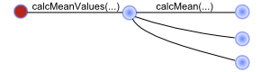

Diffusive
Diffusive is a truly distributed, distributed-computing framework based on diffusion.
Diffusive is a Java-based framework that provides the capability to distribute the execution of any
Java method simply by marking it with @Diffusive. That method is distributed to a network
of computing resources. The resources responsible for executing or further distributing that method
are called diffusers. Similar to Actor-based frameworks, a diffuser can either
execute the method, or pass it on to other diffusers.
The beauty of Diffusive is that you don't have to change your code to use it. Importantly, you define the way your code executes, and let Diffusive manage how the execution is distributed across the network of diffusers.
Working with Diffusive
any method can be distributed
You don't need to implement the equivalent of a Task interfaces.
Any method, with any signature, anywhere in your code can be distributed.
Some examples are listed below:
public double calc( long seed, long maxIterations ) { ... }
public void doOp( ParamSet params, int options ) { ... }
public Result minimize( List< Param > params, int[] options ) { ... }
public Result< Double > calc() { ... }
simply mark the methods you want distributed
Methods are marked for distribution using the @Diffusive annotation.
It's that simple! Marking a method means that when it is called, its execution will be distributed
to a remote location.
@Diffusive public double calc( long seed, long maxIterations ) { ... }
@Diffusive public void doOp( ParamSet params, int options ) { ... }
@Diffusive public Result minimize( List< Param > params, int[] options ) { ... }
@Diffusive public Result< Double > calc() { ... }
build a network of diffusers
Diffusers are responsible for:
- executing a request
- distributing that request to another diffuser, or
- creating a new diffuser to which to distribute that request
The topology of the diffuser network can be anything that can be represented as a directed graph. Which means that you can design topologies tailored to solve your specific problems.
no need to pre-deploy class files
A dynamic and generic distributed computing environment provides the ability to send any work to any physical or virtual compute node at any time. For the distribution of work to be truly dynamic means you may not know which nodes will be part of your computation before you start.
Diffusive understands that and manages the loading of java.lang.Class
objects for you. That means you don't have to worry about pre-deploying your class or JAR files.
And you can configure where diffusers go to get their class objects.
nested diffusion
All diffusers behave the same way--there is no difference between diffusers that
accept work and those that distribute work. This means that if a method marked @Diffusive
calls another method marked @Diffusive then the first method will be distributed
to a remote diffuser, and the second method will be further distributed by that same remote diffuser.
@Diffusive
public double calcMeanValues( Map< String, List< Double > > values ) {
for( Map.Entry< String, List< Double > > entry : values.entrySet() ) {
meanValues.put( entry.getKey(), calcMean( entry.getValue() ) );
}
}
@Diffusive
public double calcMean( Collection< Double > values ) { ... }
In this example, a call to marked calcMeanValues(...) will be distributed to a
remote diffuser. Because the calcMean(...) method is also marked, when the method
executing on the remote diffuser a calls it, it will get further distributed to another
remote diffuser.

Definition Nested diffusion occurs when a marked method calls another marked method.
recursive diffusion
With nested diffusion a marked method calls another marked method. What happens when a marked method calls itself?
@Diffusive
public double recursiveMethod( double value ) {
value = // updated value
if( value > MAX_VALUE ) {
return value;
}
return recursiveMethod( value );
}
In this example, the first call to recursiveMethod(...) will cause the execution
of that method to be distributed to a remote node. On that remote node, the call to itself,
which is a marked method, will cause the execution of that call to be distributed. And so it
will continue until the control logic puts a stop to it. If appropriately threaded, this could
allow the walking of networks with a simple recursive algorithm.
diffuser networks are dynamic
Nodes that can be configured, added, and removed dynamically.
uses a REST API
Communication between nodes uses a REST API. This means that writing management and monitoring tools becomes much easier. In fact, we are currently constructing a web application to manage and monitor the diffusers and servers.
Advantages of Diffusive
In diffusive programming your computation scales naturally.
In distributed computing we want to balance the amount of work evenly across all available computing resources. In nature, diffusion equalizes the concentration of particles throughout the available volume [1]. For example, suppose you gently place a drop of blue ink into a glass of still, clear water. The ink slowly diffuses through the water until the concentration of ink is about equal throughout the glass.
Diffusive allows computational tasks to diffuse naturally throughout the network of available computing resources. This provides an organic load-balancing approach that doesn't require specialized resources to manage the distribution of the work. And because of this, development and deployment using diffusive is easier.
Diffusive programming doesn't require you to change your code.
Writing code that runs reliably on one machine and across many machines is difficult. Most distributed computing
frameworks require you to modify your code to use their framework. For example, in many task-oriented systems
all computational tasks must be wrapped into the equivalent of a Task interface that defines
some sort of an execute(...) method. Space-based approaches often require your code to
write the task into a space and then poll a space for the result. In
Actor based distributed computing, extensive
use of the actor-based API is often necessary.
Diffusive programming honors your execution logic.
Diffusive programming assumes that the execution logic you defined in your code is the way you'd like your code to execute. If your code is sequential for a stretch, because order matters, and then becomes concurrent, diffusive honors that order. Your code defines the order in which it executes, and the diffusive framework takes care of distributing the work.
Diffusive allows you to separate your execution logic from your distribution logic.
This separation of the execution logic from the distribution logic is quite powerful. Recall how simple it was to write algorithms for nested or recursive diffusion. And how that, for example, provides a natural way to write a distributed map-reduce algorithm.
Diffusive programming allows you to debug most of your code locally.
Suppose that your could run the same code completely locally or in a distributed manner without changing your code. Now you could debug your application locally to ensure it runs correctly. Once you have your application the way you want it, you can run the same code in a distributed manner. If there are bugs, they'll be related to the distribute execution.
More Information
For a more complete description of diffusive programming and the reference implementation, please see the
the detailed overview or download the
Diffusive Programming paper.
paper.
What's New
Version 0.2.0
This is first version that allows users to run Diffusive from the distribution JAR files, and to separate the application (to diffuse) from the distribution JARs. Previous version required Diffusive to be run from an IDE.
- Developed command-line interfaces for
DiffuserLauncher, and for theRestfulDiffuserServer. These new interfaces allow you the ability to set various options and configuration items. To get more details, execute the jars from the command-line with the --help option:java -jar Diffusive_Launcher_0.2.0.jar --help or
- Developed command-line interfaces for the XML configuration objects:
RestfulDiffuserConfigXmland theRestfulDiffuserServerConfigXmlthat can generate and validated configuration files. - Added three examples with increasing complexity:
- A stand-alone local diffuser that allows you to run diffusive without starting a diffuser server.
- A local diffuser example that runs a local RESTful diffuser server and the diffuser launcher on the same machine.
- A single remote example that runs a local RESTful diffuser server to provide class resources, a remote RESTful diffuser server to perform the execution, and a local diffuser launcher.
- Fixed a bug related to the loading of class files that were neither in the JAR, or in the JAR's manifest's
Class-Path (which wasn't so easy). This is needed so that JAR files containing the user's
application can be run and loaded for
RestfulClassLoaderandRestfulDiffuserClassLoader. - Improved some JAX-RS exception mapping. Not yet at the point I'd like it to be.
java -jar Diffusive_Server_0.2.0.jar --help
Version 0.1.3
Updated the configuration files so that it can be run locally right out of the box (based on suggestion from Anteneh Nurlien).
- Updated the configuration files so that
restful_server_config.xmlandrandom_diffuser_strategy.xmldon't have any end-points. This allows diffusive test cases to be run locally without any configuration. Just run theRestfulDiffusiveServerclass, and then theDiffusiveLauncherclass, and it should run. - Fixed bug that prevented diffusive from running when no end-points were specified in the configuration files.
Version 0.1.2
Main change is the new capability to configure diffusers from XML files. Also small updates to incorporate fixes and added features from FreezeDry.
- Modified Diffusive's server and diffuser configuration classes to load an XML file containing
the basic configuration properties. As part of this, add XML files for configuring the diffuser
strategy. This allows the diffuser strategy to be specified in diffuser configuration XML file.
Now the diffuser server can be configured from
restful_server_config.xml, the diffusers can be configured fromrestful_diffuser_config.xml, and the diffuser strategies can be configured fromrandom_diffuser_strategy.xmlandrandom_weighted_diffuser_strategy.xml - Updated FreezeDry from version 0.2.2 to version 0.2.4 (see FreezeDry updates for more details).